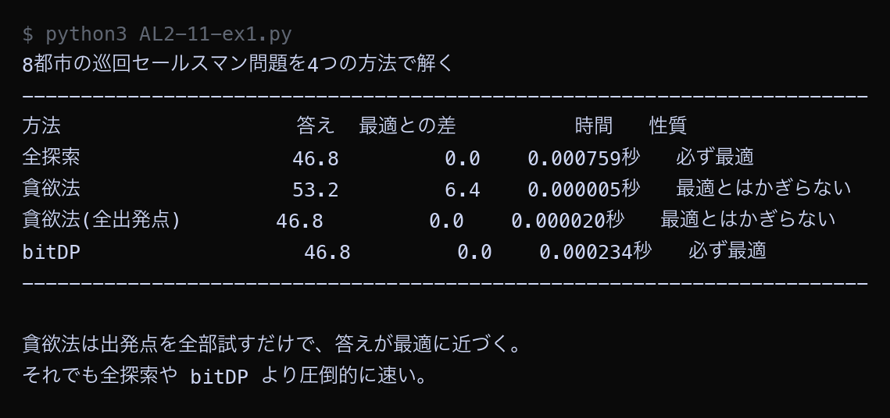

例題
例題1から例題4までのコードを実行してください。 例題3は実行に10秒ほどかかります。まず作業フォルダを用意します。
VS Code でフォルダとファイルを用意する
Step 1: 作業フォルダを作る
- デスクトップに AL2 という名前のフォルダを作る（後期の授業ではずっと同じフォルダを使う）
- AL2 フォルダの中に No11 という名前のフォルダを作る
└── AL2/
├── No10/ ← 前回のファイル
└── No11/ ← 第11回はここに保存
Step 2: VS Code でフォルダを開く
- Visual Studio Code を起動する
- メニューから 「ファイル」→「フォルダーを開く」を選ぶ
- Step 1 で作った AL2/No11 フォルダを選んで開く
左側のエクスプローラーに No11 フォルダの中身が表示される（最初は空）。
Step 3: 例題ごとにファイルを作って実行する
- 左側エクスプローラーの No11 の横にある 新しいファイルアイコンをクリック
- ファイル名を入力して Enter（例題1なら
AL2-11-ex1.py） - 例題のコードブロック右上の コピーボタンをクリック
- VS Code の編集画面に 貼り付ける（Ctrl+V / Cmd+V）
- 保存する（Ctrl+S / Cmd+S）
- 右上の ▷（再生ボタン）をクリックして実行する
今回作るファイル: AL2-11-ex1.py, AL2-11-ex2.py, AL2-11-ex3.py, AL2-11-ex4.py
今回のキーワード
| 用語（読み方） | 説明 |
|---|---|
| 最適解 さいてきかい | 考えられる中で本当にいちばん良い答え。全探索・bitDP・ダイクストラ法が出す。 |
| 近似解 きんじかい | 最適ではないが実用上じゅうぶん良い答え。貪欲法が出す。 |
| 計算量 けいさんりょう | 問題が大きくなったとき、手数がどれくらい増えるかの目安。 |
| トレードオフ trade-off | 一方を良くすると他方が悪くなる関係。「答えの質」と「かかる時間」がその代表。 |
| 多始点 たしてん / multi-start | 出発点をいろいろ変えて何度も試し、いちばん良い答えを採用するやり方。貪欲法の精度を上げられる。 |
3つの探索を同じグラフで比べる
同じ路線図・同じ出発点・同じ目的地に対して、幅優先探索・深さ優先探索・ダイクストラ法の3つを走らせ、 出てくる経路を比べます。
Python ── AL2-11-ex1.py # 同じグラフを、3つの探索アルゴリズムで解いて比べる import heapq from collections import deque # 重み付きグラフ（数字は乗車時間・分） railway = { "新宿": [("渋谷", 7), ("池袋", 9), ("品川", 30)], "渋谷": [("新宿", 7), ("品川", 9)], "池袋": [("新宿", 9), ("上野", 12)], "上野": [("池袋", 12), ("東京", 6)], "東京": [("上野", 6), ("品川", 11)], "品川": [("新宿", 30), ("渋谷", 9), ("東京", 11)], } start = "新宿" goal = "東京" INF = float("inf") def route_minutes(route): """駅を順に通ったときの合計時間""" total = 0 for i in range(len(route) - 1): for name, minutes in railway[route[i]]: if name == route[i + 1]: total = total + minutes break return total def build(came_from, goal): """ゴールからスタートへ逆にたどって道順を組み立てる""" route = [] node = goal while node is not None: route.append(node) node = came_from[node] route.reverse() return route def bfs(): """幅優先探索: 乗る路線の本数がいちばん少ない道""" came_from = {start: None} queue = deque([start]) while len(queue) > 0: current = queue.popleft() if current == goal: break for name, minutes in railway[current]: if name in came_from: continue came_from[name] = current queue.append(name) return build(came_from, goal) def dfs(): """深さ優先探索: 行けるところまで進む道""" came_from = {start: None} stack = [start] while len(stack) > 0: current = stack.pop() if current == goal: break for name, minutes in railway[current]: if name in came_from: continue came_from[name] = current stack.append(name) return build(came_from, goal) def dijkstra(): """ダイクストラ法: 合計時間がいちばん短い道""" distance = {} came_from = {} for station in railway: distance[station] = INF came_from[station] = None distance[start] = 0 queue = [(0, start)] settled = set() while len(queue) > 0: minutes, current = heapq.heappop(queue) if current in settled: continue settled.add(current) for name, weight in railway[current]: if minutes + weight < distance[name]: distance[name] = minutes + weight came_from[name] = current heapq.heappush(queue, (distance[name], name)) return build(came_from, goal) def pad(text, width): """全角文字を2文字ぶんとして数え、表示の幅をそろえる""" length = 0 for ch in text: if ord(ch) > 0x2000: length = length + 2 else: length = length + 1 return text + " " * (width - length) print(f"{start} から {goal} まで、3つの方法で経路を求める") print("-" * 66) print("方法 路線の本数 合計時間 経路") for name, function in [("幅優先探索", bfs), ("深さ優先探索", dfs), ("ダイクストラ法", dijkstra)]: route = function() print(pad(name, 16) + f"{len(route)-1:>8}本" + f"{route_minutes(route):>9}分 " + " → ".join(route)) print("-" * 66) print() print("幅優先探索は「本数」を、ダイクストラ法は「時間」を最小にしている。") print("深さ優先探索はどちらも最小にしない。ゴールへ行けることだけを確かめる方法。")
▶ 実行結果

幅優先探索とダイクストラ法は、はっきり違う経路を返しました。幅優先探索は2本・41分の「新宿 → 品川 → 東京」を選び、ダイクストラ法は3本・27分の「新宿 → 渋谷 → 品川 → 東京」を選んでいます。乗りかえが1回増えるかわりに、14分も早く着くということです。深さ優先探索は、たまたま幅優先探索と同じ経路になりました。深さ優先探索は「本数」も「時間」も最小にしないので、同じになるかどうかは、たまたま調べた順番で決まります。
巡回セールスマン問題を4つの方法で解く
巡回セールスマン問題を4つの方法で解きます。 第9回の貪欲法に「すべての都市を出発点にして試す」やり方を足した4つ目も加えます。
Python ── AL2-11-ex2.py # 巡回セールスマン問題を4つの方法で解いて比べる import math import time from itertools import permutations cities = [ ("学校", 2, 2), ("郵便局", 10, 3), ("図書館", 14, 9), ("カフェ", 6, 12), ("公園", 3, 8), ("駅", 17, 4), ("病院", 12, 13), ("書店", 8, 7), ] n = len(cities) INF = float("inf") distance = [] for i in range(n): row = [] for j in range(n): d = math.sqrt((cities[i][1] - cities[j][1]) ** 2 + (cities[i][2] - cities[j][2]) ** 2) row.append(d) distance.append(row) def pad(text, width): """全角文字を2文字ぶんとして数え、右側に空白を足して表示の幅をそろえる""" length = 0 for ch in text: if ord(ch) > 0x2000: length = length + 2 else: length = length + 1 return text + " " * (width - length) def brute_force(): """全探索: すべての順番を試して、いちばん短いものを返す""" best = None for order in permutations(range(1, n)): total = 0.0 here = 0 for city in order: total = total + distance[here][city] here = city total = total + distance[here][0] if best is None or total < best: best = total return best def greedy_from(start): """start を出発点にして、貪欲法でルートを作る""" visited = [start] total = 0.0 here = start while len(visited) < n: nearest = None for j in range(n): if j in visited: continue if nearest is None or distance[here][j] < distance[here][nearest]: nearest = j total = total + distance[here][nearest] visited.append(nearest) here = nearest return total + distance[here][start] def greedy(): """貪欲法（出発点は0番の都市に固定）""" return greedy_from(0) def greedy_all_starts(): """すべての都市を出発点にして貪欲法を試し、いちばん良い答えを選ぶ""" best = None for start in range(n): value = greedy_from(start) if best is None or value < best: best = value return best def bit_dp(): """動的計画法（bitDP）: 「回った集合」と「いまいる都市」で表を作り、最適解を求める""" full = (1 << n) - 1 best = [] for visited in range(1 << n): best.append([INF] * n) best[1][0] = 0.0 for visited in range(1 << n): for here in range(n): if best[visited][here] == INF: continue for nxt in range(n): if visited & (1 << nxt): continue new_length = best[visited][here] + distance[here][nxt] if new_length < best[visited | (1 << nxt)][nxt]: best[visited | (1 << nxt)][nxt] = new_length answer = INF for here in range(n): if best[full][here] == INF: continue answer = min(answer, best[full][here] + distance[here][0]) return answer methods = [ ("全探索", brute_force, "必ず最適"), ("貪欲法", greedy, "最適とはかぎらない"), ("貪欲法(全出発点)", greedy_all_starts, "最適とはかぎらない"), ("bitDP", bit_dp, "必ず最適"), ] results = [] for name, function, note in methods: began = time.time() value = function() elapsed = time.time() - began results.append((name, value, elapsed, note)) best_value = None for name, value, elapsed, note in results: if best_value is None or value < best_value: best_value = value print(f"{n}都市の巡回セールスマン問題を4つの方法で解く") print("-" * 72) print("方法 答え 最適との差 時間 性質") for name, value, elapsed, note in results: print(pad(name, 20) + f"{round(value, 1):>8}" + f"{round(value - best_value, 1):>12}" + f"{elapsed:>12.6f}秒 " + note) print("-" * 72) print() print("貪欲法は出発点を全部試すだけで、答えが最適に近づく。") print("それでも全探索や bitDP より圧倒的に速い。")
▶ 実行結果

全探索・bitDP・貪欲法(全出発点) の3つが、いずれも46.8という同じ答えを出しました。出発点を1つに固定した貪欲法だけが53.2で、6.4長くなっています。注目すべきは貪欲法(全出発点)で、8回ぶん計算しても0.000022秒しかかからず、全探索の約40分の1の時間で同じ答えにたどり着いています。ただし、たまたま最適に当たっただけで、いつでも当たる保証はありません。「必ず最適」と書けるのは全探索と bitDP だけです。
大きさを変えて一括で測る
都市の数を6個から16個まで変えて、3つの方法の答えと時間を一度に測ります。 全探索は12都市までで打ち切ります。実行に10秒ほどかかります。
Python ── AL2-11-ex3.py # 問題の大きさを変えて、3つの方法の時間を一括で測る import math import time from itertools import permutations INF = float("inf") def make_cities(count): """計算で位置を決めるので、何度実行しても同じ配置になる""" cities = [] for i in range(count): cities.append(((i * 7) % 23, (i * 11) % 19)) return cities def make_distance(cities): """都市どうしの直線距離を表にして返す""" n = len(cities) table = [] for i in range(n): row = [] for j in range(n): row.append(math.sqrt((cities[i][0] - cities[j][0]) ** 2 + (cities[i][1] - cities[j][1]) ** 2)) table.append(row) return table def brute_force(distance): """全探索: すべての順番を試して、いちばん短いものを返す""" n = len(distance) best = None for order in permutations(range(1, n)): total = 0.0 here = 0 for city in order: total = total + distance[here][city] here = city total = total + distance[here][0] if best is None or total < best: best = total return best def greedy(distance): """貪欲法: いまいる場所からいちばん近いところへ進むことをくり返す""" n = len(distance) visited = [0] total = 0.0 here = 0 while len(visited) < n: nearest = None for j in range(n): if j in visited: continue if nearest is None or distance[here][j] < distance[here][nearest]: nearest = j total = total + distance[here][nearest] visited.append(nearest) here = nearest return total + distance[here][0] def bit_dp(distance): """動的計画法（bitDP）: 「回った集合」と「いまいる都市」で表を作り、最適解を求める""" n = len(distance) full = (1 << n) - 1 best = [] for visited in range(1 << n): best.append([INF] * n) best[1][0] = 0.0 for visited in range(1 << n): row = best[visited] for here in range(n): if row[here] == INF: continue for nxt in range(n): if visited & (1 << nxt): continue new_length = row[here] + distance[here][nxt] if new_length < best[visited | (1 << nxt)][nxt]: best[visited | (1 << nxt)][nxt] = new_length answer = INF for here in range(n): if best[full][here] == INF: continue answer = min(answer, best[full][here] + distance[here][0]) return answer print("都市の数を変えて、3つの方法の答えと時間を測る") print("（全探索は12都市までで打ち切る。時間がかかりすぎるため）") print("-" * 76) print("都市数 全探索の答え/時間 貪欲法の答え/時間 bitDPの答え/時間") for count in [6, 8, 10, 12, 14, 16]: cities = make_cities(count) distance = make_distance(cities) if count <= 12: began = time.time() b_value = brute_force(distance) b_time = time.time() - began b_text = f"{round(b_value, 1):>6} /{b_time:>8.3f}秒" else: b_text = " （長すぎるため省略）" began = time.time() g_value = greedy(distance) g_time = time.time() - began began = time.time() d_value = bit_dp(distance) d_time = time.time() - began print(f"{count:>4}都市 {b_text} {round(g_value, 1):>6} /{g_time:>8.6f}秒" f" {round(d_value, 1):>6} /{d_time:>8.3f}秒") print("-" * 76) print() print("全探索と bitDP の答えは、どの大きさでも完全に一致している。") print("貪欲法の答えだけが少し長い。そのかわり時間はほとんどかかっていない。")
▶ 実行結果
![AL2-11-ex3.py の実行結果。都市の数を変えて、3つの方法の答えと時間を測る / （全探索は12都市までで打ち切る。時間がかかりすぎるため） / ---------------------------------------------------------------------------- / 都市数 全探索の答え/時間 貪欲法の答え/時間 bitDPの答え/時間 / 6都市 57.8 / 0.000秒 57.8 /0.000006秒 57.8 / 0.000秒 / 8都市 58.0 / 0.001秒 58.7 /0.000004秒 58.0 / 0.000秒 / 10都市 59.5 / 0.067秒 60.2 /0.000008秒 59.5 / 0.001秒 / 12都市 73.1 / 8.314秒 80.5 /0.000013秒 73.1 / 0.008秒 / 14都市 （長すぎるため省略） 83.3 /0.000010秒 75.9 / 0.042秒 / 16都市 （長すぎるため省略） 87.1 /0.000012秒 79.7 / 0.220秒 / ---------------------------------------------------------------------------- / / 全探索と bitDP の答えは、どの大きさでも完全に一致している。 / 貪欲法の答えだけが少し長い。そのかわり時間はほとんどかかっていない。](images/a11_ex3_result.png)
全探索と bitDP の答えは、どの大きさでも完全に一致しています。12都市では、全探索に約8秒かかったのに対し、bitDP は0.01秒ほどで、数百倍の差がつきました。14都市と16都市では、全探索は終わらないため省略しています。貪欲法の答えは、12都市で80.5（最適は73.1）と約10%長くなっていますが、時間はほとんどゼロです。「必ず最適・遅い」「必ず最適・速い」「近似・非常に速い」の3種類がそろっていることを確かめてください。
条件からアルゴリズムを選ぶ
3つの問い（どんな問題か／重みがあるか／最適解が必要か）を、そのままプログラムにします。 条件を渡すと、使うべきアルゴリズムと理由が返ってきます。
Python ── AL2-11-ex4.py # 条件から「どのアルゴリズムを使うべきか」を判定するプログラム # 後期に学んだ5つのアルゴリズムを、条件で選び分ける。 def pad(text, width): """全角文字を2文字ぶんとして数え、右側に空白を足して表示の幅をそろえる""" length = 0 for ch in text: if ord(ch) > 0x2000: length = length + 2 else: length = length + 1 return text + " " * (width - length) def choose(kind, weighted, size, need_best): """条件から使うべきアルゴリズムを1つ選んで、名前と理由を返す kind : "経路" なら2地点間の最短経路、"巡回" なら全部回って戻る問題 weighted : 辺に重み（時間や距離の差）があるなら True size : 頂点や都市の数 need_best : 必ず最適解が必要なら True """ if kind == "経路": if not weighted: if need_best: return "幅優先探索", "重みがないので、歩数の少ない順に広げれば必ず最短になる" return "深さ優先探索", "最短でなくてよいなら、調べるマスが少ない深さ優先探索で足りる" return "ダイクストラ法", "重みがあるので、コストの小さい順に確定していく必要がある" # kind == "巡回" if not need_best: return "貪欲法", "最適でなくてよいので、いちばん近い都市へ進むだけで一瞬で終わる" if size <= 10: return "全探索", f"{size}都市なら順番の数が少なく、全部試しても一瞬で終わる" if size <= 20: return "bitDP", f"{size}都市では全探索は終わらないが、bitDP なら表が現実的な大きさに収まる" return "貪欲法", f"{size}都市では bitDP でも表が大きすぎる。近似解を使うしかない" cases = [ ("駅の乗りかえ回数を最小にする", "経路", False, 9000, True), ("迷路のゴールに行けるかだけ判定する", "経路", False, 400, False), ("カーナビで最も早く着く道を案内する", "経路", True, 100000, True), ("床コストのある迷路を最小コストで抜ける", "経路", True, 10000, True), ("修学旅行で6か所を回る順番を決める", "巡回", True, 6, True), ("工場のドリルが18か所をあける順番を決める", "巡回", True, 18, True), ("宅配便が100軒を回る順番を5秒で決める", "巡回", True, 100, False), ("配送センターが30軒の最適な順番を1晩かけて求める", "巡回", True, 30, True), ] print("条件から使うべきアルゴリズムを選ぶ") print("=" * 76) for description, kind, weighted, size, need_best in cases: name, reason = choose(kind, weighted, size, need_best) print(pad(description, 48) + "→ " + name) print(" 理由: " + reason) print() print("=" * 76) print() print("同じ「巡回」の問題でも、都市の数と「最適解が必要か」で答えが変わる。") print("アルゴリズムは1つを覚えるのではなく、使い分けられることが大切。")
▶ 実行結果
![AL2-11-ex4.py の実行結果。条件から使うべきアルゴリズムを選ぶ / ============================================================================ / 駅の乗りかえ回数を最小にする → 幅優先探索 / 理由: 重みがないので、歩数の少ない順に広げれば必ず最短になる / / 迷路のゴールに行けるかだけ判定する → 深さ優先探索 / 理由: 最短でなくてよいなら、調べるマスが少ない深さ優先探索で足りる / / カーナビで最も早く着く道を案内する → ダイクストラ法 / 理由: 重みがあるので、コストの小さい順に確定していく必要がある / / 床コストのある迷路を最小コストで抜ける → ダイクストラ法 / 理由: 重みがあるので、コストの小さい順に確定していく必要がある / / 修学旅行で6か所を回る順番を決める → 全探索 / 理由: 6都市なら順番の数が少なく、全部試しても一瞬で終わる / / 工場のドリルが18か所をあける順番を決める → bitDP / 理由: 18都市では全探索は終わらないが、bitDP なら表が現実的な大きさに収まる / / 宅配便が100軒を回る順番を5秒で決める → 貪欲法 / 理由: 最適でなくてよいので、いちばん近い都市へ進むだけで一瞬で終わる / / 配送センターが30軒の最適な順番を1晩かけて求める → 貪欲法 / 理由: 30都市では bitDP でも表が大きすぎる。近似解を使うしかない / / ============================================================================ / / 同じ「巡回」の問題でも、都市の数と「最適解が必要か」で答えが変わる。 / アルゴリズムは1つを覚えるのではなく、使い分けられることが大切。](images/a11_ex4_result.png)
8つの場面について、それぞれ使うべきアルゴリズムと理由が表示されました。同じ「巡回」の問題でも、6都市なら全探索、18都市なら bitDP、100軒なら貪欲法と、答えが変わっています。注目すべきは最後の「30軒の最適な順番を1晩かけて求める」で、最適解がほしくても、30都市では bitDP の表が大きすぎるため、貪欲法を選ぶしかありません。choose 関数の中身を読むと、条件がそのまま if 文になっていることが分かります。